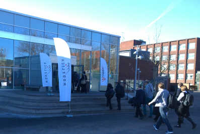
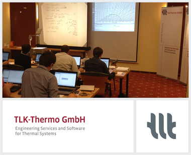
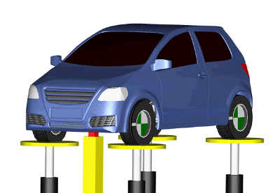
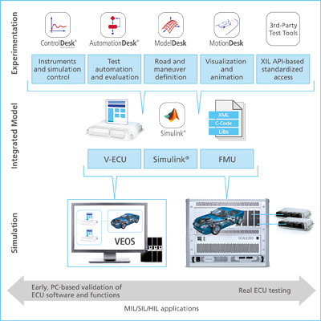
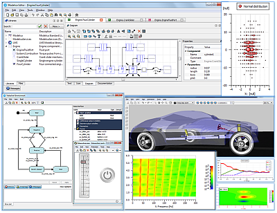
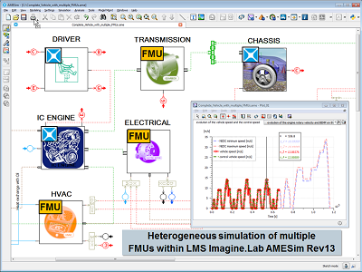
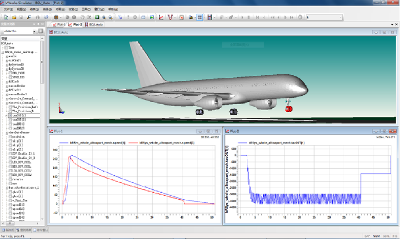
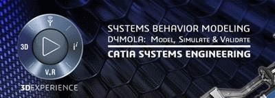

Modelica Newsletter 2014-2
Newsletter #2 of 2014 (News from Modelica Association, from Modelica related projects and from Modelica tool vendors)
Table of Contents
- Letter from the Board
- Modelica Association News
- Educational News
- Training Courses for Modelica and TIL
- Certified Dymola and Modelica Courses for Professionals
- North American Conference
- Free Interactive Book: Modelica by Example
- Library News
- New release of the Vapor Cycle Library
- The new Vehicle Dynamics 1.9 Adds Support for Delft-Tyre and Standard Tyre Interface Tire Models
- Thermal Power Library 1.8 available
- Vendor News
- Modelon in Asia!
- Efficient Integration of Different Modeling Approaches - dSPACE supports the FMI Interface
- LMS Imagine.Lab AMESim Provides Heterogeneous Simulation Platform with Modelica
- LMS Imagine.Lab AMESim Empowers Model-Based Collaborative Design with FMI
- JModelica.org 1.13
- FMI Library 2.0b3
- FMI Toolbox for MATLAB/Simulink version 1.8.1
- FMI Add-In for Excel version 1.3.3
- Hybrid Simulation Solutions for Systems Engineering
- ITI Symposium 2014
- MWorks 2014
- Webinars on Modelica and Dymola
- Online Modelica Syntax Checker from Maplesoft
Letter from the Board
Dear Modelica Interested,
The 10th International Modelica Conference took place in March 2014 in Lund, Sweden. The conference was a great success and about 400 participants enjoyed the many presentations on Modelica, FMI, the large exhibition and discussions between the participants. As always, the conference proceedings are freely available from Linköping University Press. The next, 11th Modelica Conference is now planned to take place in September 2015 at "Le Palais des Congrès de Versailles" (close to Paris and directly in front of the famous Palace of Versailles). The exact date will be fixed soon. It will be organized by Dassault Systèmes (local organizer), by Linköping University (scientific program) and by the Modelica Association.
The FMI 2.0 Release Candidate 1 was released in 2013. In the meantime about 80 tickets had been reported and fixed in the specification draft. This improved draft was the basis of a FMI Plug-Fest in Berlin, organized by QTronic two weeks ago. Most of the tool vendors currently working on prototype implementations for FMI 2.0 met and evaluated the compatibility of their prototypes and of the latest version of the specification draft. For more information see below.
If you have interesting news for the Modelica community, please contact the newsletter editor (Michael Tiller) for information on how to submit newsletter articles for possible inclusion in the next newsletter. The deadline for articles for the next newsletter is September 15, 2014.
Best wishes from:
Martin Otter (Chairman of the Modelica Association)
Modelica Association News
10th Modelica Conference

As already mentioned in the letter from the board, the 10th Modelica conference was a great success, and demonstrated that the use of Modelica and FMI is quickly expanding. A clear indicator of the growth was the number of contributions: 50% more than for the previous conference. While contributions from the automotive industry where as strong as ever, some engineering domains grew even more:
- The rapid adoption, and continued evolution of the FMI standard resulted in a very well attended tutorial, and a number of interesting sessions. This is a continued trend over several conferences.
- Two sessions dedicated to aerospace applications showed that the promotion of Modelica in a number of EU Clean Sky calls has spawned interesting research, and first results were presented.
- The IEA ECB (Energy in Buildings and Communities) annex 60 Programme has a strong focus on Modelica and FMI and has resulted in a number of contributions from the buildings research community.
- There is a trend of broadening the use of Modelica models, e.g. for fault handling and analysis, early concept design of systems, and optimal system operation after commissioning (MODRIO project)
As always, the conference participants constituted a healthy mix of industry practitioners, tool vendors and researchers. The community is growing, a large number of new companies and institutions came for the first time to a Modelica conference, and the participant numbers indicate that Modelica is growing regionally in the USA and Asia now.
Overall, the growth of Modelica and FMI seems to have accelerated in the recent past, and the Modelica Association is optimistic about the continued growth of strong standards for systems modeling and simulation.
This article is provided by Hubertus Tummescheit (Modelon AB)
FMI 2.0 Pre-Release Plug-Fest
On May 12th and 13th, 14 programmers who are responsible for FMI functionality from 8 FMI-supporting companies (Dassault Systèmes Lund, dSPACE, IFPEN, ITI, MapleSoft, Modelon, QTronic, Siemens (LMS)) met in Berlin for the "FMI 2.0 Pre-Release Plug-Fest".
In those two days, a useful network of personal contacts was established between different vendors to directly resolve compatibility issues in the future. During this meeting, many improvements where made to both import and export support across tools. A number of small issues where discovered in the specification and logged in the FMI issue tracker. No major issue was found that would derail the current release plan for FMI 2.0. Many Test-FMUs and CrossCheck results where created and uploaded to focus further development.
The Plug-Fest participants propose to the FMI Steering Committee to:
- release FMI 2.0 after the remaining issues have been resolved and to
- approve small changes to the CrossCheck Rules proposed by the group.
Given the productivity of such personal meetings the community should adopt the "PlugFest" format as an integral part of the development process for future FMI releases!
This article is provided by Andreas Junghans (QTronic GmbH)
Educational News
Training Courses for Modelica and TIL

TLK-Thermo offers two day Modelica training courses for learning basic and advanced object oriented modeling. The Modelica course is an introduction to the most important features of Modelica, including numerical aspects. With many practical exercises the participants will learn how to design and implement Modelica libraries (not only within thermal science).
Furthermore, we are offering a one day course for thermal system modeling with the Modelica library TIL. The training course is directed towards simulation and modeling specialists with basic knowledge of the Modelica programming language. It can be seen as an advanced course to the basic Modelica training.
Upcoming courses:
- Modelica training: June 11th - 12th, 2014
- Introduction to TIL: June 13th, 2014
- Modelica training: September 23rd - 24th, 2014
- Introduction to TIL: September 25th, 2014
For further information see www.tlk-thermo.com or send your e-mail to training@tlk-thermo.com
This article is provided by Matthias Kwak (TLK-Thermo GmbH)
Certified Dymola and Modelica Courses for Professionals
Modelon offers certified Dymola and Modelica training for both new and experienced professional users in industry and academia. We have scheduled courses in Europe, USA, and now also Japan, and give courses world-wide and on-site on demand. Upcoming training events:
- May 19-23, Lund, Sweden: Dymola Introduction Course
- June 2-6, Tokyo, Japan: Dymola Introduction Course
- September 15-19, Hamburg, Germany: Dymola Introduction Course
- September 15-19, Ann Arbor, USA: Dymola Introduction Course
- September 22-26, Göteborg, Sweden: Dymola Introduction Course
- November 3-7, Ann Arbor, USA: Dymola Introduction Course
- November 17-21, Munich, Germany: Dymola Introduction Course
- November 24-28, Lund, Sweden: Dymola Introduction Course
See our schedule for additional events. See our full catalog for a listing of all available courses, also for libraries and specific industry domains and applications. Please contact us for further information or register here.
This article is provided by Adina Tunér (Modelon AB)
North American Conference
- Where:
- Georgia Tech, Atlanta, GA
- Date:
- October 13-14, 2014
The North America Modelica Users’ Group is pleased to announce its second Users’ Conference. Building on the success of the first conference in 2013 and the growing interest in the Modelica and Functional Mockup Interface (FMI) standards throughout the world, the 2014 North America Modelica Users’ Conference will provide a face-to-face forum to get up to speed on latest innovations, industrial applications and best practices for modeling and simulation. As with the previous conference, Modelica and FMI users will have the opportunity to share ideas, discuss issues specific to North American users and address modeling problems all without crossing the Atlantic!
Located at Georgia Tech in Atlanta, the format of the conference will be a one-day symposium (October 14) featuring presentations from many of the most respected experts in the Modelica and FMI world, preceded by an optional hands-on training day from our sponsoring vendors (October 13).
To keep informed about the upcoming Users' Conference and other Modelica related events in North America, sign up for the NA-MUG mailing list.
This article is provided by Michael Tiller (Xogeny)
Free Interactive Book: Modelica by Example

Xogeny is proud to announce the release of "Modelica by Example", a new book on Modelica by Dr. Michael Tiller. A free interactive version of the book is available online now.
The goal in producing this freely available book is to make it easy for anyone, anywhere to learn Modelica through a series of easy to understand examples. The book starts with the basics of representing mathematical behavior and then gradually demonstrates how the features in Modelica allow this behavior to be captured in reusable components, subsystems and architectures.
The HTML version of the book offers readers the chance to interact with the examples. Nearly every figure presented in the book showing the response of an example model also features an "interactive" option that allows readers to modify parameter values and then re-simulate the system response directly in their browser.
The book is currently released in an "Early Access" version. The purpose of this release is to collect feedback on the book from the community with the goal of making improvements prior to publication of a print edition of the book.
Electronic versions of the book in both ePub and PDF format for offline use can also be purchased from the book homepage.
This article is provided by Michael Tiller (Xogeny)
Library News
New release of the Vapor Cycle Library
The Vapor Cycle Library is a Modelica model library for the design of vapor cycle systems, including vapor compression cycles for heating or cooling purposes. Component interaction and dynamic system behavior can be studied at an early design stage.
The library can be used as an integrated part of energy management design for both mobile and residential applications, by combining it with e.g. Liquid Cooling Library, Heat Exchanger Library and other Modelica libraries that cover mechanical and electrical parts of the system such as Electric Power Library.
The latest release of the vapor-cycle library contains a number of exciting features, in particular an interface to the NIST REFPROP fluid property data base.
The following new components and features have been added:
- A pump model with several different options for defining flow and power characteristics
- A turbine model with flow rate determined according to the Stodola law and a given nominal operating point
- A fluid flow source that allows to evaluate the effect of charge in a closed cycle on system performance, and add or remove charge in a running simulation
- Automatic aggregation of working fluid volume and mass in a system
- An interface to the NIST REFPROP data base. Any single-component fluid from REFPROP can be included easily in the drop-down list for possible working fluids
- Computational speed in fluid property functions has been increased by a factor two
- Temperature is introduced as an alternative input to specific enthalpy in working fluid sources and sinks
This article is provided by Carl Wilhelmsson (Modelon AB)
The new Vehicle Dynamics 1.9 Adds Support for Delft-Tyre and Standard Tyre Interface Tire Models

The Vehicle Dynamics Library is a Modelica model library for modeling and simulation of vehicle dynamics, including chassis and powertrain. It provides an open and user-extensible environment for full vehicle and subsystem analysis. Designed with a hierarchical structure and an extensive library of predefined vehicle components and templates, the configuration of any class of wheeled vehicles is convenient and straight-forward. Vehicle Dynamics Library allows you to optimize and verify design of your vehicle systems from the early design phases through control design and implementation. Vehicle Dynamics Library is unique in that it provides true multi-body, multi-domain simulation with real-time performance and model export capabilities to allow distribution across your organization.
The Vehicle Dynamics Library has been extended to include support for the industry standard Delft-Tyre product line of TNO, which includes MF-Tyre ® and MF-Swift ® tire force models.
MF-Tyre is the Delft-Tyre standard implementation of the renowned Pacejka Magic Formula, with validated steady-state and transient behavior up to 8Hz, making it the ideal tire model for handling and control prototyping analyses.
The Delft-Tyre wheel model fully supports our Vehicle Dynamics Library’s built-in ground models, TNO road property files, and OpenCRG road descriptions.
The Standard Tyre Interface (STI) was developed in 1997 by the TYDEX workshop to define a standard interface between vehicle, tire and road models. This standardized interface makes it possible to switch between different tire models without the need to modify the vehicle or road models.
By supporting the STI, our Vehicle Dynamics Library enables you now to quickly add 3rd party tire models that adhere to this standardized interface.
This article is provided by Carl Wilhelmsson (Modelon AB)
Thermal Power Library 1.8 available
The Thermal Power Library is a Modelica model library for design and commissioning of thermal power plants, including steam and combined cycle power plants. The library contains a large number of components used in standard plant configurations, and due to its flexible structure it can also be used for new plant concepts, unusual layouts and evaluation of innovative research concepts.
Models can be used for the definition of start-up sequences, plant-wide control design, emergency scenario simulation and controller tuning. The library covers the complete steam cycle, but also the flue gas side including a wide range of after-treatment technologies like de-sulphurization, NOx-removal and Carbon Capture and Storage (CCS) technologies.
Release Highlights
The latest release of Thermal Power Library put a strong emphasis on improving the user-friendliness. Significant component improvements also empowers the user with new modeling possibilities:
- New gas-side heat exchangers for heat recovery boilers and coal fired boilers
- Improved initialization options
- A large selection of pressure drop models, including the option for user defined pressure loss models
- Model options for robust simulation of plant start-up
The user is allowed to choose from a large variety of pressure loss correlations, including quadratic, linear, loss coefficient based etc.
An alternative fundamental pipe model improves model robustness significantly for plant start-up applications with large transients.
This article is provided by Carl Wilhelmsson (Modelon AB) and Hubertus Tummescheit (Modelon AB)
Vendor News
Modelon in Asia!
Modelon K.K. is the most recent Modelon subsidiary with a new office in Tokyo. We provide solutions, services, training and product sales related to Modelica and FMI for the Asian market. We have local technical expertise that is fluent in English, Japanese and Chinese.
“Japan and Asia do not lack tool vendors, but finally got the long-missed Modelica and FMI solution provider to make these standards successful here, and I am very excited to be part of this.” Says Rui Gao, Vice President of Modelon K.K.
We have already received a warm welcome from customers in Japan and Asia and to meet the demand, we are now looking to hire talented engineers with passion for model-based system engineering in general and Modelica and FMI in particular.
This article is provided by Johan Andreasson (Modelon AB)
Efficient Integration of Different Modeling Approaches - dSPACE supports the FMI Interface

dSPACE is the world’s leading provider of solutions for developing ECU software and mechatronic controls. With a history of over 25 years, dSPACE products provide solutions throughout the development cycle for applications in a wide range of industries.
As an open standard, the Functional Mock-up Interface (FMI) simplifies the use of best-in-class tools for specific modeling tasks and the consistent reuse of models in different development phases and departments. dSPACE now supports FMI on its PC-based virtual validation platform VEOS® and on its real-time simulation platform SCALEXIO® in addition to the support of MATLAB/Simulink®-based simulation models. Functional mock-up units (FMUs) can be integrated in comprehensive MIL/SIL/HIL projects together with virtual ECUs (V-ECUs) and Simulink models. The user workflow for importing and connecting these FMUs to other model interfaces and to simulator I/O is identical to the user-friendly workflow for V-ECUs and Simulink models. Different modeling approaches (e.g., based on physical modeling with Modelica) can therefore be integrated into new or existing MIL/SIL/HIL projects quickly and efficiently.
dSPACE ensures smooth interfacing between all the tools in the dSPACE tool chain for virtual validation and HIL projects to provide consistent simulation and parameter access throughout the different development phases. This means you can reuse not only the models based on FMI, but also corresponding tests and experiments based on tools such as AutomationDesk® and ControlDesk® Next Generation or other XIL API-compatible tools. This completes the FMI reusability approach for virtual validation and HIL use cases.
Highlights of dSPACE FMI support:
- FMI support provided with VEOS (MIL/SIL use cases) and SCALEXIO (HIL use cases)
- Consistent interfaces and variable access for the seamless reuse of models, tests, experiment layouts and data throughout the different development phases
Please visit the dSPACE website for more information.
This article is provided by Andreas Pillekeit (dSPACE GmbH)
LMS Imagine.Lab AMESim Provides Heterogeneous Simulation Platform with Modelica

LMS Imagine.Lab AMESim Rev13 provides an excellent platform for heterogenous simulation. Users benefit from two key values: access to pre-existing libraries of comprehensive, validated, domain-specific models, and the ability to create custom libraries using a full-featured Modelica development environment. Assembled models are compiled and executed to take full advantage of a powerful set of analysis tools for visualization, linear analysis and design exploration.
AMESim Rev13 SL2 will be released in May 2014. This service level release includes a streamlined Modelica modeling workflow and improved statechart environment. The statechart environment is an AMESim-integrated graphical definition, simulation and analysis environment for control and operating logic. It is based on the Harel Finite State Machine theory, using clear and robust language semantics based on Modelica. The statechart environment is designed to provide an easy-to-use graphical environment to define statecharts, validate them, simulate them, and analyze results in a way that is very similar to the methods used in other AMESim analysis tools (such as plots or dashboards).
Our team enjoyed many interesting discussions at our exhibitor booth and vendor session during the 10th International Modelica Conference. If you weren't able to attend our presentations, you can still find our papers in the Modelica Publications page:
- Antoine Viel "Implementing stabilized co-simulation of strongly coupled systems using the Functional Mock-up Interface 2.0"
- Simon Bliudze (École Polytechnique Fédérale de Lausanne), Sébastien Furic "An operational semantics for hybrid systems involving behavioral abstraction"
- Vincent Berthoux, Sébastien Furic, Loïc Wagner "Statechart as a means to control plant models in LMS Imagine.Lab AMESim"
Please visit the Siemens PLM Software website for more information.
This article is provided by Michael Sasena (Siemens)
LMS Imagine.Lab AMESim Empowers Model-Based Collaborative Design with FMI

LMS Imagine.Lab AMESim Rev13 covers the complete range of the FMI specification, confirming its position as a powerful and open platform for 1D multi-domain system simulation, aimed at supporting Model-Based Collaborative Design at all steps of product development.
Embedded Know-how
With AMESim co-simulation FMUs, benefiting from high detail physical models and from AMESim’s native best-adapted solver becomes possible in any FMI-compliant target environment. All these powerful solver capabilities are embedded and can be modified from the importing tool. This maximizes the reliability of the results, protects against potential effects of software version changes, and allows even non-expert users to easily plug AMESim technology into their existing software environment.
IP Protection
Given the importance of customer-supplier relationships in automotive and aircraft industries, the exposed parameters and variables of an AMESim FMU can be completely fine-tuned. Thus model designers can safely select the confidentiality level they want—from “white-box” FMUs to “black-box” FMUs—while distributing their models, which is a strong requirement of Model-Based Collaborative Design.
Heterogeneous simulation platform for system-level analysis
Thanks to its capability to import multiple Model Exchange or Co-Simulation FMUs, AMESim can easily couple together multidisciplinary subsystems coming from various specialized codes. AMESim users can therefore predict and analyze the performance of their complete product at the system-level.
Siemens PLM Software, as active member of the FMI initiative, promotes the use and the development of the Functional Mock-up Interface as a standard tool to support real-world Model-Based Collaborative Design and continues developing products that serve the needs of its industrial customers.
Please visit the Siemens PLM Software website for more information.
This article is provided by Michael Sasena (Siemens)
JModelica.org 1.13

JModelica.org is an extensible Modelica-based open source platform for optimization, simulation and analysis of complex dynamic systems. The main objectives of the project are to create an industrially viable open source Modelica environment, while offering a flexible platform serving as a virtual lab for algorithm development and research. JModelica.org also provides a platform for technology transfer, where industrially relevant problems can inspire new research and where state of the art algorithms can be propagated from academia into industrial use.
Highlights of JModelica.org 1.13
- Support for FMI 2.0 Export, according to RC1
- New CasADi tool chain for optimization:
- Support for more Modelica features than previous CasADi-based tool chain including user defined functions in models
- Flat model exposed in Python in symbolic form using CasADi that can be inspected and manipulated
- Support for a variety of collocation options
- Inlined switches in the simulation runtime giving a more robust initialization and simulation of systems with discrete parts.
- Improved compliance, especially enhancements have been made on the support for:
- Expandable connectors
- Unknown array sizes in functions
- Handling of the state select attribute
This article is provided by Tove Bergdahl (Modelon AB)
FMI Library 2.0b3
FMI Library (FMIL) is a software package written in C that enables integration of Functional Mock-up Units (FMUs) import in applications. The package provides a C API for interacting with all parts of FMUs, including unzipping, loading of shared object files (DLLs) contained in FMUs, as well as parsing of XML model metadata files. The user is thereby relieved from managing the details of FMU interaction, which significantly reduce the time required to implement FMU import capabilities. FMI Library is suitable in contexts where FMUs need to be integrated in existing applications or in custom software projects.
The new 2.0b3 release introduces FMI2.0RC2 support into FMI Library.
Highlights of FMIL 2.0b3
- Full support for FMI for Model Exchange 1.0 and 2.0RC2
- Full support for FMI for Co-Simulation 1.0 and 2.0RC2
- A unified C API encapsulating all parts of the FMU interaction, including ZIP, DLL and XML management
- Build system based on CMake, enabling generation of native build scripts (MSVC on Windows, GCC on Linux)
- Extensive API documentation in HTML format
This article is provided by Tove Bergdahl (Modelon AB)
FMI Toolbox for MATLAB/Simulink version 1.8.1
The FMI Toolbox for MATLAB® provides systems, control and simulation engineers with a solution for seamless exchange of simulation models between any FMI compliant tool and MATLAB® and Simulink. It allows users to combine physical and functional models from different sources for integration on system level to assess and evaluate design choices and performance. The command line interface and the Simulink blockset offer users full flexibility to exploit the simulation and computational power of MATLAB® and Simulink to create insight into the interactions and behavior of complex systems.
Key features
- Import of Co-simulation and Model Exchange FMU using Simulink blockset and MATLAB® command line interface for scripting
- Simulink block-set supporting code generation with Simulink Coder for e.g. HIL simulations
- Export of Simulink models as Co-Simulation or Model Exchange FMU
- Static and dynamic analysis through design-of-experiments (DoE) with functions for optimization, calibration, control design, and robustness analysis
- Simulation of FMUs, using MATLAB®'s built in integrators, useful for users without access to Simulink
New in version 1.8 and 1.8.1
- Simulink block set supports dSPACE´s rti1006.tlc target
- New script functions for the Simulink blocks
- Improved MATLAB® interface with new variable lists and user provided log listener
This article is provided by Tove Bergdahl (Modelon AB)
FMI Add-In for Excel version 1.3.3

FMI Add-In for Microsoft Excel® enables steady-state and dynamic simulation of physical models integrated in a spread sheet environment.
FMI Add-In for Microsoft Excel® links state of the art Modelica-compliant tools to Microsoft Excel® through the FMI standard. The power of Excel® combined with the flexibility and portability of the open-standard model format from Functional Mockup Interface (FMI) allows for a highly efficient workflow for experiment setup and reporting for design explorations, batch simulations, and more.
Key features
- Import and simulation of Functional Mock-up Units (FMUs) in Microsoft Excel®
- Parallel computations on multi-core platforms
- Batch simulations, parameter sweeps, design space exploration with easy-to-use and flexible interface
- Based on the validated FMI Library and compliant with all major FMI tools
New in version 1.3.3
- Improved trajectory result generation
- Minor bug fixes related to locale depedent exiry dates and script functions
This article is provided by Tove Bergdahl (Modelon AB)
Hybrid Simulation Solutions for Systems Engineering
As an IBM Business Partner, ITI develops a hybrid simulation platform in close collaboration with IBM in order to provide engineers and software developers in systems engineering with a powerful solution for designing embedded systems with real-time capabilities.
The software product line IBM Rational Rhapsody is a visual development environment that uses graphical models to generate software applications in various programming languages. In order to help several development teams collaborate in the development process, Rational Rhapsody incorporates requirement management as an integral part of its functionality for an enhanced product lifecycle.
Taking advantage of the Modelica language, systems engineers can integrate plant models, which describe physically correct system behavior, through the Functional Mock-up Interface (FMI) into the overall product development process. Combining Rational Rhapsody and SimulationX into a hybrid simulation platform by using Systems Modeling Language (SysML), Unified Modeling Language (UML), Modelica and FMI takes systems engineering to the next level as it closes the gap between designing discrete control behavior and continuous plant behavior.
Contact IBM or ITI for more information about this powerful hybrid simulation platform for comprehensive virtual prototyping in a variety of automotive, aerospace, industrial, medical, consumer and other applications.
This article is provided by Manuela Joseph (ITI GmbH)
ITI Symposium 2014
Preparations for the 17th ITI Symposium in November are well underway. The committee is currently reviewing all submitted abstracts to finalize the program. The user convention on system simulation has become an institution with engineers and scientists for discussing solutions for modelling and simulations in product development.
The accompanying exhibition and various sponsorship options offer companies the opportunity to present themselves to a broad audience of expert users and decision-makers. The exhibition area has been expanded this year to put exhibitors more front and center at the event. It can now accommodate up to 10 stands; registrations are processed on a first-come-first-serve basis.
For more information, visit symposium.itisim.com.
This article is provided by Manuela Joseph (ITI GmbH)
MWorks 2014

MWorks is a Modelica-based visual modeling and simulation platform for multi-domain engineering systems. MWorks 2014 was released on May 15, 2014. The key highlights are:
Modelica Language and Standard Library Support:
- The Modelica Language Specification v3.2 R2 is well supported and previous versions, such as 2.2 and 1.6 are also full supported;
- The Modelica Standard Library v3.2.1 as well as previous versions (e.g., v3.2, v3.0, v2.2.2 and v1.6) are well supported.
Performance improvements:
- The efficiency of dealing with high-index DAE problems is greatly improved, especially on simulation of Multibody systems;
- Result files larger than 4 gigabytes are now supported.
Tools improvements:
- The license tool is changed to FlexNet Licensing tool based, and commercial libraries can be license-customized based on the tool and can also be encrypted according to Modelica Specification rules;
- The post-processor supports pausing simulations, modifying parameters and then continuing the simulation.
For more information see en.tongyuan.cc.
This article is provided by Fanli Zhou (Suzhou Tongyuan Software & Control Technology Co., Ltd.)
Webinars on Modelica and Dymola

We are happy to announce the availability of a series of Modelica and Dymola webinars. The webinars cover a range of topics on Dymola, Modelica and several industry solutions. The first four webinars are available for viewing now, and more will follow.
INTRODUCTION TO MODELICA & DYMOLA
Why use Modelica and Dymola to model complex engineering systems?
MBSE WITH MODELICA & DYMOLA
Accelerate Model Based Systems Engineering with Modelica & Dymola
DYMOLA: A HYBRID VEHICLE EXAMPLE
Building Modelica Models with Dymola - A Hybrid Vehicle Example
DYMOLA: POWER GENERATION & DISTRIBUTION
Optimize energy generation & distribution systems with Modelica with Dymola
This article is provided by Dag Brück (Dassault Systèmes AB, Lund)
Online Modelica Syntax Checker from Maplesoft
Many modeling tools, including MapleSim, support the Modelica standard so that model and component definitions can be developed in one system and then used in another. To ensure maximum compatibility with other tools, it is important that the Modelica code adheres strictly to the Modelica language definition. Maplesoft has developed a Modelica syntax checker to test code against different versions of the standard language definitions to ensure that it is syntactically correct.
Although originally written for use inside MapleSim, Maplesoft realized that this tool could be useful to users of other Modelica-based modeling tools, and so decided to make it freely available to the community. If you are having trouble importing a Modelica file from one system to another, you can use this online tool to check the syntax of your code and to determine where changes need to be made if it the code is not syntactically correct.
You will find the Modelica Syntax Checker at www.maplesoft.com/modelicasyntaxchecker.
This article is provided by Tina George (Maplesoft)